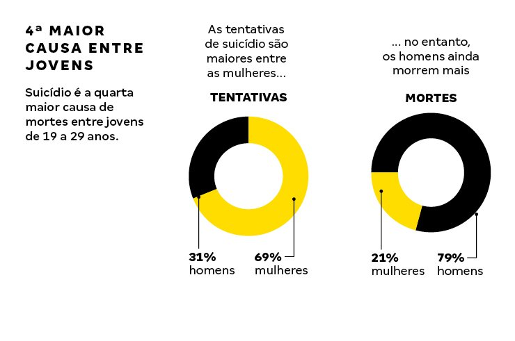

Dados sobre Suicídio
De acordo com a Organização Mundial de Saúde (OMS), cerca de 800 mil pessoas se suicidam por ano em todo o mundo. No Brasil são quase 12 mil casos por ano. Para a ABP e o CFM, falta uma política de atenção, com infraestrutura e recursos humanos suficientes, para ajudar quem sobre com stress, depressão e esquizofrenia, transtornos que podem levar ao desejo suicida.
O Brasil é o quarto país latino-americano com o maior crescimento no número de suicídios entre 2000 e 2012, segundo relatório divulgado na última semana pela OMS. Entre 2000 e 2012, houve um aumento de 10,4% na quantidade de mortes – alta de 17,8% entre mulheres e 8,2% entre os homens. Chama a atenção o fato de o número de mulheres que tiraram a própria vida ter crescido mais (17, 80%) do que o número de homens (8,20%) no período de 12 anos. A mortalidade de pessoas com idade entre 70 anos ou mais é maior, de acordo com a pesquisa.
FONTE: MS/SVS/CGIAE - SISTEMA DE INFORMAÇÕES SOBRE MORTALIDADE (SIM){kind=link}
O presidente da ABP, Antônio Geraldo da Silva, chama a atenção para a subnotificação dos casos, pois, segundo ele, grande parte das tentativas de suicídio não chega aos registros oficiais por não existir notificação compulsória. “Ainda faltam políticas públicas voltadas especialmente para o grupo, entre elas ambulatórios especializados e um serviço telefônico gratuito e nacional que funcione 24 horas. Além desses serviços, a OMS acrescenta medidas como reduzir acesso a armas de fogo, pesticidas e medicamentos, principais métodos usados na prática”, disse.
 FONTE: MS/SVS/CGIAE - SISTEMA DE INFORMAÇÕES SOBRE MORTALIDADE (SIM){kind=link}
Em 2006, o Ministério da Saúde publicou uma portaria com as diretrizes do que seria uma estratégia nacional de prevenção ao suicídio. Entre as medidas estavam previstas campanhas para informar e sensibilizar a sociedade de que o suicídio é um problema de saúde pública que pode ser prevenido. Segundo as entidades médicas, no entanto, até agora a política não saiu do papel. Ao contrário disso, segundo último levantamento elaborado pelo CFM sobre leitos no Brasil, só em psiquiatria foram desativados quase 7.500 leitos em todo o país entre janeiro de 2010 e julho do ano passado.
Legislação da Constituição Brasileira
Art. 3º São objetivos da Política Nacional de Prevenção da Automutilação e do Suicídio:
I – promover a saúde mental;
II – prevenir a violência autoprovocada;
III – controlar os fatores determinantes e condicionantes da saúde mental;
IV – garantir o acesso à atenção psicossocial das pessoas em sofrimento psíquico agudo ou crônico, especialmente daquelas com histórico de ideação suicida, automutilações e tentativa de suicídio;
V – abordar adequadamente os familiares e as pessoas próximas das vítimas de suicídio e garantir-lhes assistência psicossocial;
VI – informar e sensibilizar a sociedade sobre a importância e a relevância das lesões autoprovocadas como problemas de saúde pública passíveis de prevenção;
VII – promover a articulação intersetorial para a prevenção do suicídio, envolvendo entidades de saúde, educação, comunicação, imprensa, polícia, enre outras;
VIII – promover a notificação de eventos, o desenvolvimento e o aprimoramento de métodos de coleta e análise de dados sobre automutilações, tentativas de suicídio e suicídios consumados, envolvendo a União, os Estados, o Distrito Federal, os Municípios e os estabelecimentos de saúde e de medicina legal, para subsidiar a formulação de políticas e tomadas de decisão;
IX – promover a educação permanente de gestores e de profissionais de saúde em todos os níveis de atenção quanto ao sofrimento psíquico e às lesões autoprovocadas.
Art. 4º O poder público manterá serviço telefônico para recebimento de ligações, destinado ao atendimento gratuito e sigiloso de pessoas em sofrimento psíquico.
Ações do Ministério da Saúde
• Portaria nº 1.876, institui Diretrizes Nacionais para Prevenção do Suicídio a ser implantadas em todas as unidades federadas.
• Portaria nº 3088/2011, foi instituída a Rede de Atenção Psicossocial (RAPS) para pessoas com sofrimento ou transtorno mental, no âmbito do Sistema Único de Saúde (SUS)
• Portaria nº 1271, a qual define a Lista Nacional de Notificação Compulsória de doenças, agravos e eventos de saúde pública nos serviços de saúde públicos e privados em todo o território nacional, torna as tentativas de suicídio e o suicídio agravos de notificação compulsória imediata em todo o território nacional.
• Portaria nº 3.479, institui o Comitê Gestor para elaboração de um Plano Nacional de Prevenção do Suicídio no Brasil em consonância com as Diretrizes Nacionais para Prevenção do Suicídio e com as Diretrizes Organizacionais das Redes de Atenção à Saúde.
• Portaria Nº 3.491, institui incentivo financeiro de custeio para desenvolvimento de projetos de promoção da saúde, vigilância e atenção integral à saúde direcionados para prevenção do suicídio no âmbito da Rede de Atenção Psicossocial do Sistema Único de Saúde (SUS).